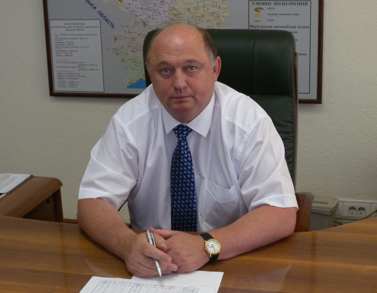

Начальник Cлужби автомобільних доріг у Донецькiй області Ставитський Олександр Михайлович

Народився 22 липня 1960 року (м. Донецьк).
Освіта вища. Донецький політехнічний інститут – 1984 рік, спеціальність
„Автомобільні шляхи, інженер-будівельник”.
Трудова діяльність
1984 - майстер Мелітопольского шляхового ремонтно-будівельного управління Запорізького "Облшляхрембудтреста"
1984-1986 - служба в Радянській Армії
1986-1993 - майстер, виконроб, головний інженер Мар'їнськогоРайШРБУ
1993-1997 - начальник Мар'їнськогоРайШРБУ
1997-2000 - заступник генерального директора об'єднання "Донецький облавтодор"
2001-2004 - перший заступник, заступник начальника по експлуатаційному утриманню автомобільних доріг Служби автомобільних доріг у Донецькій області
2004-2013 - директор ДП "Донецькийоблавтодор" ВАТ "ДАК" Автомобільні дороги України
2013-по т.ч - начальник Служби автомобільних доріг у Донецькій області
Відвідавши офіційну ВЕБ-сторінку Державної служби автомобільних доріг у Донецькій області, Ви отримали нагоду ознайомитися зі структурою дорожньої Служби та функціональними обов`язками структурних підрозділів, історією сучасним та майбутнім організації. На ВЕБ-сторінці також розміщена інформація про державні закупівлі з будівництва та ремонту доріг. Запрошуємо Вас взяти участь у оголошених торгах. Будемо дуже Вам вдячні за співпрацю.